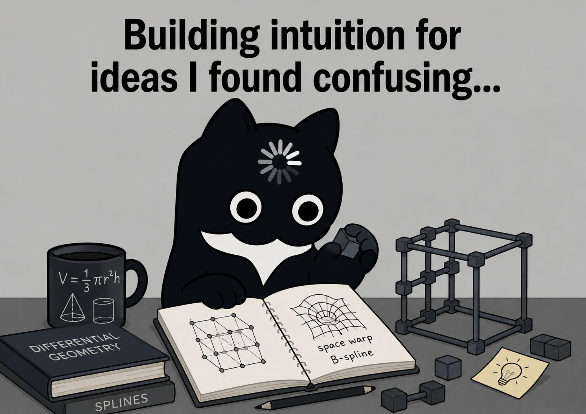

Home
Resume
Projects
Concepts
Hobbies & More
Contact
Concepts

2026
B-Spline Volumes
This site
What is a B-spline volume and why does it matter for 3D face encoding? From control points to tensor products, with interactive demos.
Geometry Processing
Splines
Interactive
Mesh Eigenfunctions & Spectral Analysis
This site
Why the Laplacian? What does it mean to have eigenvectors of one? Building the intuition from scratch, with an interactive 3D mesh visualizer.
Geometry Processing
Linear Algebra
Interactive
2025
Diffusion for 3D Shapes
Medium
Instilling shape priors — how diffusion models extend from images to 3D, and what it takes to generate plausible geometry from noise.
3D Vision
Generative Models
Diffusion
2020
Understanding the Frenet-Serret Frame
Medium
Building intuition for the moving coordinate frame that follows a curve through space — and why it matters for robotics and motion planning.
Robotics
Differential Geometry
2019
Understanding Markov's Localisation
Medium
A ground-up walkthrough of the probabilistic algorithm robots use to figure out where they are — no prior knowledge assumed.
Robotics
Probability
The Roti Shop
Medium
Reflections on traveling and the unexpected connections you find along the way.
Reflections
Travel